Вечер 1
Крюки на зубцах
Сбросить лестницы с Восточной стены, узнать, куда делась Угольная сотня, и решить, кто где стоит в первую ночь осады.
Открыть сценарий →
Рудный Венец уже в осаде. Под стенами серые знамёна маршала Гардена Риорда с серебряным молотом, на зубцах звякают железные крюки, через стену свистят камни катапульт — Вдовы, Ворчуна и Жаровни. Стену держат пять участков, а героев хватает на три. Каждый вечер ваш отряд решает, кто где стоит этой ночью, и утром видит цену на схеме стены: где знамёна держатся, где трещат, где на зубцах уже чужое. Маршал обещает «сохранить город», если ему откроют ворота. Осталось узнать, кого он называет городом. А в последний рассвет гвардия пойдёт на Северные ворота.
Перед чтением вступления сверьте место героев, присутствующих людей и предметы с итогом прошлого вечера. Если условия встречи отпали, сыграйте последствия там, где находится партия. Событие по расписанию может произойти за кадром. Герои узнают о нём от тех, кто был на месте.
Покажите лестницы, оставшиеся на зубцах, и спросите, кого смена успевает предупредить внизу. Следующий разговор о пощаде происходит с людьми, видевшими отступление. За оставленную стену не присуждайте исход успешной обороны.
Сверьтесь с записями о дворах. Уже ушедшие встречают соседей у развилки. В переулке остаются лишь те, кому действительно нужна помощь. Группа может искать отставших или идти с первой колонной.
Гвардия приходит в проходную и видит пустое корыто. Узнайте у Журны, кто видел перевозку. Решение вечера переходит к тому, выдадут ли свидетели место цепи и можно ли доставить её к решётке в срок.
Разыграйте утро у последних повозок. Отметьте, кого вывели и был ли открыт путь. О том, чьё знамя поднято на ступенях, беженцы узнают от очевидца. При спорном исходе оставьте весть открытой до возвращения свидетеля.
На стену не пойдём. Созовём семьи Рынка у обозов. Встречаем семьи у ближайшей свободной повозки. Лестницы цепляются за зубцы. Мы выводим желающих по Камышовой; маршал получает стену, но не этих людей.
Покажем кузнецам клеймо, а смене у ворот — дощечку; спросим, кто видел оба распоряжения. Доступные свидетельства — Клеймо на наконечниках, Дощечка Харвена. Заказ на копья оплачен ещё во время переговоров. Харвен отдельно снял сотню со стены. Клеймо и приказ отвечают на разные вопросы. Показываем Журне наконечник и просим сверить дату заказа. Предупреждаем Рабочие дворы о цене приказа Харвена. Они могут уйти сами; ранняя весть не останавливает штурм.
Дальняя лестница остаётся на зубцах; отряд уступает гребень. Ставим дежурного у выхода из переулка и считаем отступивших. Собираем отступивших у Колодезного переулка и прикрываем обоз, пока бой идёт дальше. Восточная стена остаётся занята.
Для игры без подготовки: что говорят люди, места в стороне от главной дороги и прохожие. Пометки о правде слухов — только для ведущего; сказанное за столом становится фактом мира, лишь когда вы его подтвердите.
«Маршалу не наши дома нужны, а переправа. Кто держит наш мост, тот держит всю дорогу на низовья — вот он в нас и вцепился».
Правда. Так и есть: Риорду нужны переправа и кузни Венца для следующих походов, тайной силы за войной нет. Слух повторяет то, что знает любой горожанин; годится для разговора у котлов Рынка в первых вечерах.
«Камышовая нас в каждую осаду выручала. В прошлый раз, говорят, по ней весь Рынок за одну ночь ушёл, и ни один не утонул».
Отчасти правда. Рыбаки и правда считают, что Камышовая дорога выручала город в каждую прежнюю осаду; «весь Рынок за ночь» — преувеличение. Слух ведёт к колонне Мейры в вечер 7: уйти по Камышу можно, пока участок не прорван и с колонной идёт пара героев.
«Кто по свисту угадает, которая бьёт — Вдова, Ворчун или Жаровня, — в того этой ночью камень не попадёт. Мы с соседкой каждую ночь угадываем».
Неправда. Суеверие: угадывать катапульты по свисту — городская забава, от камней она не бережёт. Удобная реплика для соседа на посту; на схеме стены она ничего не меняет.
«Угольную сотню ночью к воротам увели и никому слова не сказали. Наши старики одни на Восточной остались, с котлом пепла против лестниц».
Правда. Харвен в ночь перед первым штурмом тихо снял Угольную сотню к воротам; это видно уже в первой сцене вечера 1. Что написано на его дощечке, слух не знает: это улика «Дощечка Харвена» у ворот.
«Журна Кельт каждую ночь сама на стену ходит. Говорят, обет дала: пока Венец не отстоят, у горна спать не ляжет».
Отчасти правда. Журна и правда чинит стену каждую ночь, но не по обету, а из стыда: две весны назад её дворы сковали для квартирмейстера Риорда наконечники с клеймом «К-Ж». Это открывается, когда ей показывают наконечник в вечер 1; слух этого не выдаёт.
«Обруч у правительницы заговорённый. Пока он лежит посреди схемы, ни одна стена не упадёт — так ещё прадеды говорили».
Неправда. Корона Последнего Угля — простой железный обруч без чар, а Восточная стена рухнет в полдень вечера 4 при любой игре. Ильвара сама скажет, что это железо и клятва, а не волшебство; после обвала слух можно отдать растерянному горожанину.
«С Ольхового Брода с прошлой весны никто на торг не приходит. Говорят, маршал их тоже „пощадил“ — и с тех пор о них ни слуху ни духу».
Правда. Риорд «пощадил» Ольховый Брод: людей увели в его карьеры под надзор. Подробности знают Эрдик (белая лента, вечер 3) и Лессара (вечер 5). Слух лишь даёт тревожное эхо слову «пощада»; полного текста и его статей он не раскрывает.
«Ворчуна маршал на колёса поставил, чтобы каждую ночь по новой стене бить. Дозорные его по скрипу находят, когда он переезжает».
Правда. Ворчун и правда меняет цель каждую ночь; на разводе ведущий называет, куда он смотрит, а в вечер 2 это говорит дозорный. Сверх объявленных целей ночи слух ничего не даёт.
«Кто белую тряпку за ставню вывесит, того маршал и пощадит. Серые с поля смотрят и считают, в каких окнах белое».
Неправда. Белые тряпки на Верхних улицах — образ, а не механика. Кого Риорд называет городом, решают не тряпки, а полный текст пощады: Коронный двор и Верхние улицы, без Рабочих дворов, Рынка, слободы и Пристани. Это открывается в вечер 5.
«В Белом павильоне оружия не поднимают, а поручители там до утра ночуют. Этот обычай даже серые держат, я сам видел».
Правда. Обычай перемирия из описания павильона: на нём держатся обмен пленными в вечер 5 и последнее слово маршала в вечер 7. Слух подсказывает, что под белым флагом туда можно пойти, но ничего не обещает.
«На Холме у соседей тысяча копий, не меньше. Спустятся разом — и маршалу конец, до весны не досидит».
Отчасти правда. На Холме две сотни Эрдика, и одни они не пойдут: им нужна бумага или слово города (вечера 3 и 6). Союз даёт два зелёных знамени и помощь у арки в битве, но осаду не снимает. Хорошая реплика, чтобы позвать героев на Холм Знамён.
«Под каждым угольным знаменем сотня, и у каждой свой старший. Правительница их всех по именам знает — пятнадцать имён без запинки».
Правда. Ильвара и правда знает каждую из пятнадцати сотен по старшему. Пусть это прозвучит, когда стол спорит о сотнях: правительница считает людей, а не фишки.
Неглубокая ниша в подпорной стене Коронного двора, у самого навеса, с железной чашей внутри. По старому обычаю в первую ночь каждой осады горожане приносят сюда по угольку из своего очага, чтобы у города был общий огонь. Сейчас чаша полна до краёв, угли подёрнуты золой, но под ней ещё тлеют. Посыльные, пробегая мимо, по привычке касаются края чаши ладонью.
Колодец посреди Рабочих дворов, с воротом, почерневшим от сажи. Вода в нём отдаёт железом, и пить её любят только старые кузнецы. После ночной смены на стене подмастерья выливают на головы по ведру и долго фыркают. Есть обычай: кто выковал свой первый гвоздь, бросает его в колодец на счастье, и дно, говорят, сплошь выложено гвоздями.
Дощатый мостик через сточную канаву между Угольной слободой и Нижним рынком. В мирные годы здесь менялись: угольщики несли мешок угля, рыбаки — связку вяленой рыбы, и о цене никто не спорил. Старое правило мостика — ссору на него не вносить: поругались, так оставь ругань на своём берегу. Теперь через него тянутся люди с узлами, и доски прогибаются под каждым.
Короткий глухой переулок у Нижнего рынка, где испокон веку живут бондари. Вдоль стен штабелями лежат бочки, на каждой зарубка семьи, которая её сбила. В торце, на стене последнего дома, выбита черта: до неё дошла вода в год большого половодья. Теперь бондари день и ночь сбивают бочки для золы, и стук их молотков слышно до самой речной стены.
Каменная скамья у нижнего пролёта Коронных ступеней, отполированная до блеска. Когда-то здесь ждали очереди те, кто шёл к правителю с жалобой, и на спинке до сих пор видны выцарапанные знаки дворов. Ильвара принимает без очереди, так что скамья пустует, и сюда присаживаются посыльные перевести дух. Говорят, кто посидел на ней, тот наверху без ответа не останется.
Корчма в Рабочих дворах; над её дверью висят старые кузнечные мехи, давно дырявые. С начала осады пива здесь не варят, а в задней комнате на лавках спят бригады мастеровых между сменами на стене. Хозяйка держит на огне котёл с кипятком и денег не берёт. На столешнице вырезаны имена всех, кто когда-нибудь спорил здесь о цене железа и помирился.
Сухой старый рыбак в просмолённой куртке; на плече шест вдвое выше его самого, ладони в мозолях от верёвок.
«Лодку я по плеску узнаю. Эта чужая: гребут так, будто у них дом горит».
Может рассказать: Лодки с лестницами всегда идут к Рыбному спуску, и рыбаки Мейры уже привыкли встречать их там шестами.
Широкая угольщица в прожжённом переднике, с закопчённым котелком на поясе и платком, сдвинутым на затылок.
«Сотни приходят и уходят, милые. А крыша у меня одна, и та под самой стеной».
Может рассказать: Знает поимённо все семьи Угольной слободы и скажет, в каких домах живут старики, которым одним до Колодезного переулка не дойти.
Подмастерье из Рабочих дворов: сажа до локтей, одна бровь опалена, за ухом торчит гвоздь.
«Раньше подковы ковал, теперь скобы для зубцов. Скоба проще: ей не надо нравиться лошади».
Может рассказать: Северная проходная Рабочих дворов выводит прямо к Воротному двору; этим путём мастеровые носят к воротам всё, что выковали.
Сутулый писарь с Верхних улиц в чернильных нарукавниках; в кармане постукивают куски мела.
«Пишу, что велят, стираю, что прошло. Мела в городе хватит на любую осаду».
Может рассказать: Каждое утро пишет на створах Северных ворот приказы и новости и помнит, что там было написано вчера и позавчера.
Бойкая молодая рыбачка с корзиной копчёной рыбы на бедре и мокрым подолом; волосы стянуты рыбачьей бечёвкой.
«Рыбу ешьте с костями, служивые. Мягче всё равно не будет, а сытнее — да».
Может рассказать: Знает, как в половодье ходят по Камышовой дороге: по вешкам, от одной к другой, не сходя с островков поймы.
Хмурый возчик в овчинной безрукавке, с кнутом за голенищем и без телеги: её забрали в баррикаду у ворот.
«Телегу мою в баррикаду — ладно. Колесо только верните, оно ещё от деда».
Может рассказать: Знает, у кого на Нижнем рынке ещё остались телеги и лошади и кто отдаст их без долгих уговоров.
8 сессий по Около 3 часов: четыре сцены примерно по 40 минут. Подготовленные герои — уровень 3. Прочитайте первую сессию, выберите состав и передайте игрокам отдельную страницу героев.
В мастерской создайте или откройте свой черновик, выберите импорт пакета и укажите package.json либо нужный файл из variants. Проверьте сценарий и состав в предпросмотре; активацию подтверждает ведущий. Сюжетные развилки, часы давления и жанровые действия разрешаются ведущим — они не становятся автоматически сыгранными событиями.
Пакеты разных размеров используют первые N героев в порядке карточек. Дополнительные герои дают новые роли, но не обязательные ключи к истории. Выбор произвольного состава требует правки черновика и повторной проверки.
Суровая надежда в золе: тесная оборона, ясные цифры на схеме, потери без натурализма; каждая победа кем-то оплачена.
Сбросить лестницы с Восточной стены, узнать, куда делась Угольная сотня, и решить, кто где стоит в первую ночь осады.
Открыть сценарий →Услышать пощаду маршала, понять, о каком городе она, решить судьбу беглого обозника и заставить замолчать Жаровню.
Открыть сценарий →Решить, отдать ли Рынок воротам по плану Харвена, найти соседей на Холме Знамён и узнать, сколько простоит Угольная башня.
Открыть сценарий →Пережить падение Восточной стены, вывести семьи Угольной слободы через Колодезный переулок и поставить Зольную баррикаду.
Открыть сценарий →Получить полный текст пощады — у Лессары или из сумки гонца — и прочитать городу, кого маршал называет городом.
Открыть сценарий →Заключить союз с соседями Эрдика, сберечь горн, пока Журна куёт новую цепь, и поставить зелёные знамёна на стену.
Открыть сценарий →Выслушать последнее слово маршала, вывести колонну Мейры по Камышу, условиться о сигнале и поставить пары на последнюю ночь перед штурмом.
Открыть сценарий →Удержать Коронные ступени, пока капитан гвардии несёт «Серый молот» к ним, и решить, кто останется по эту сторону решётки.
Открыть сценарий →
Дорожное платье в золе, перевязанная рука; простой железный обруч лежит рядом со схемой стены, а не на голове.
Правительница Рудного Венца. Отказала маршалу в поклоне; принимает защитников под навесом Коронного двора без очереди.
Удержать город целиком, не отдав ни одного квартала за обещание верхним улицам.
Если город придётся отдать, она выйдет к Риорду с обручем и предложит себя вместо рабочих семей. Молчит об этом, потому что Харвен запер бы её в башне.
Не подписывает ничего, что делит город; не делает семьи заложниками.
На прямой вопрос, что она сделает, если город падёт или знамя врага встанет на ступенях, отвечает прямо: «Себя я отдать могу. Их — нет».

Высокий дворф с кожаной перевязью, золой в бороде и дощечками приказов за поясом.
Начальник защитников Рудного Венца. Требует людей к воротам и считает сотни лучше всех в городе.
Удержать Северные ворота любой ценой: «Ворота — это город. Остальное — стены».
В ночь перед штурмом тихо снял Угольную сотню с Востока к воротам, никого не предупредив. В его дощечке Рынок и слобода — «держать до востребования». Это жестокий расчёт, не измена.
Не отдаёт ворот без боя; не лжёт о дощечке, если её увидели.
Показывает дощечку, если его спрашивают о сотне при Ильваре или если её видит Тарна: «Я не бросаю их. Я выбираю, что удержу».

Широкий пояс, короткие рукава, деревянная ложка за ухом и сложенные списки в кармане фартука.
Распорядительница Нижнего рынка: кормит защитников и держит рыбаков на речной стене.
Если Рынок не удержать — вывести семьи живыми по Камышовой дороге к соседям, не разлучая близких.
У неё готовы списки трёхсот семей Рынка и Пристани и уговор с соседскими дворами: хлеб сейчас — работа после войны. Молчит, потому что Харвен назовёт это бегством.
Не пишет списков «лишних»; не разлучает семьи.
Показывает списки и уговор, когда её спрашивают, куда уйдут люди: «Списки не для бегства. Чтобы никого не забыть».
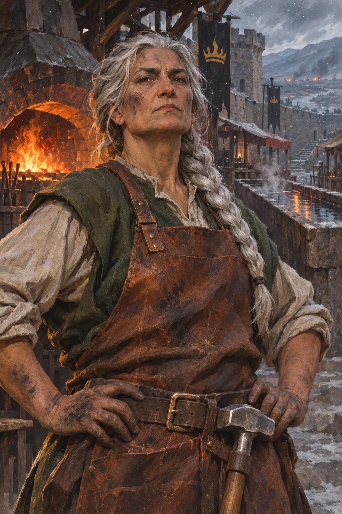
Серебряная коса, кожаный фартук, отполированный молоток на поясе, руки в саже.
Старшая мастерских Рабочих дворов; её рабочие каждую ночь чинят стену там, где она трещит.
Удержать Мастерские — без горна город станет просителем — и искупить клеймо.
Две весны назад её дворы сковали для квартирмейстера Риорда триста наконечников с клеймом «К-Ж». Она стыдится и потому чинит стену сама.
Не обещает чужого труда; не бросает горн.
Признаётся в заказе, когда ей показывают наконечник с клеймом: «Два года назад их квартирмейстер заплатил вперёд. Я ковала то, чем они лезут к нам».
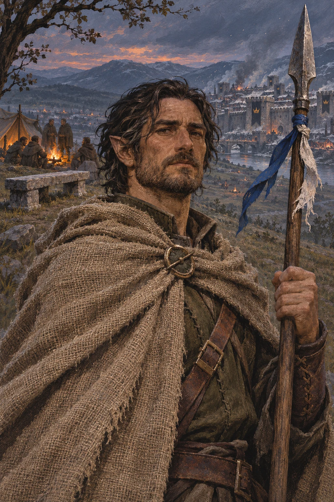
Полуэльф в плаще из грубой шерсти; на копье синяя и обтрёпанная белая ленты.
Избранный предводитель соседского ополчения на Холме Знамён; присяги городу не давал.
Остановить Риорда до соседских деревень и вернуть своих домой.
Белая лента — Ольховый Брод, его деревня, которую Риорд «пощадил» прошлой весной: людей увели в карьеры. Тогда он не дрался и стыдится этого.
Не ставит своих одних на участок; не умирает за чужие ворота в одиночку.
Рассказывает о Броде, когда его спрашивают о белой ленте: «Белая — это Брод. Его тоже щадили».
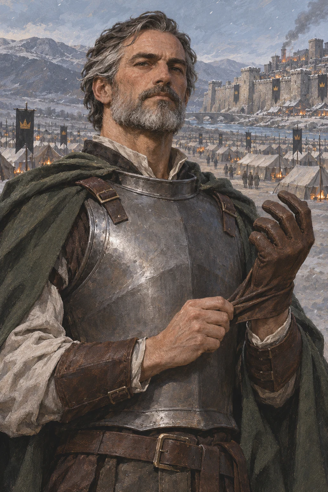
Ухоженная седая борода, неброский панцирь, перчатки, которые он снимает перед подписью.
Маршал, осаждающий Рудный Венец. Требует открыть ворота «ради пощады городу».
Переправа и кузни Рудного Венца как арсенал для следующих походов, а рабочие — под надзор при них.
Войну начал он сам. Пощада нарочно делит город: глашатаю не дали перечня, чтобы верх и низ спорили между собой.
Прямо не лжёт — говорит точно и узко; статью о переселении не отменяет ни за какие слова.
На вопрос, кого он называет городом, отвечает перечнем и не стыдится: «Город — это то, что записано городом».

Перевязанное запястье, простой знак посольской службы, очень аккуратно сложенный плащ.
Офицер маршала; ведёт переговоры о пленных и местных перемириях в Белом павильоне.
Не повторить Ольховый Брод.
Её рота охраняла колонну Брода. У неё копия полного текста пощады с карандашной пометкой у статьи о переселении. Её рота стоит на дороге у Камыша.
Не обещает мира за всю армию; не поднимает оружия против Риорда.
Отдаёт копию без броска, если её прямо спрашивают, что значит «город», спрашивают о Броде или кладут перед ней короткую пощаду: «То же, что у Брода. „Под надзором“ — значит навсегда».
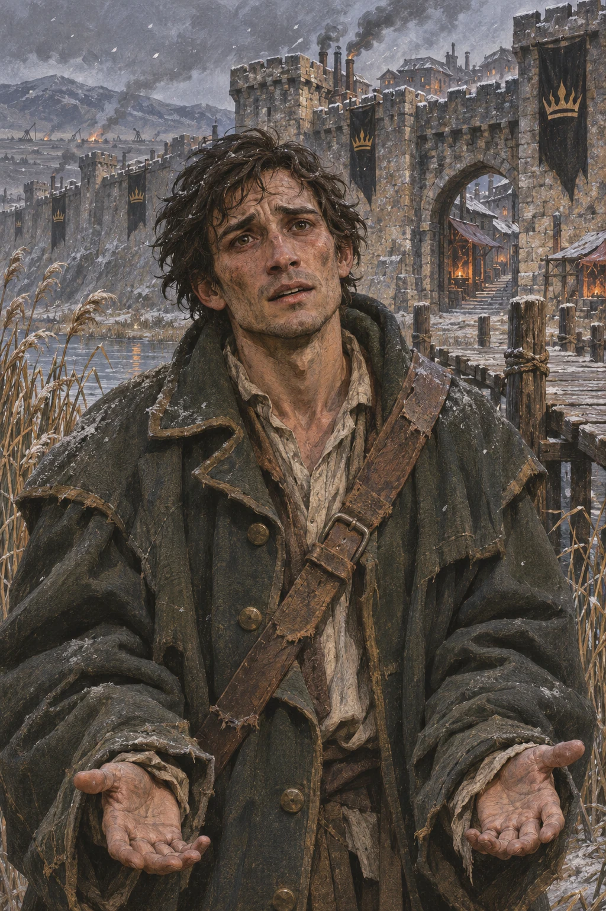
Молодой человек в чужой, слишком большой обозной куртке, с ремнём носильщика через плечо.
Беглый обозник маршала; просит убежища в городе.
Безопасное место и жизнь без телег маршала.
Унёс копию приказа обозу. Знает, что расчёт Жаровни — такие же обозники, как он.
Не возвращается в лагерь; не выдумывает военных сведений.
Отдаёт приказ обозу за обещание убежища: «Бирки уже нарезаны. Триста».

Лёгкая чешуя под серым плащом, длинная секира; за спиной на древке — знамя «Серый молот».
Капитан гвардии маршала и его знаменосец.
Поднять «Серый молот» на Коронных ступенях до рассвета.
Поклялся вернуть знамя в шатёр нетронутым, если не поднимет его на ступенях: потеряв половину сил, он отходит или сдаётся, а не умирает за знамя.
Не бьёт лежачих и пленных; знамя поднимает только на ступенях.
Об обычае знамени говорит сам, если спросить его о «Сером молоте»: «До рассвета — ступени. После — шатёр».
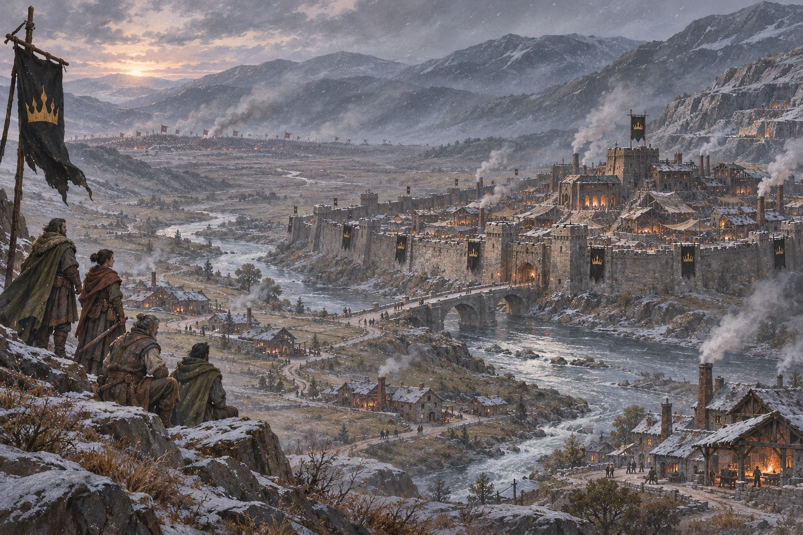
Речная долина под невысокими горами, где люди, дворфы и эльфы живут бок о бок среди старых дорог и кузнечных посёлков. Дороги связывают ремесленные города и свободные общины, которые не присягают никому, кроме собственных сходов. Над долиной всегда стоит дымка от горнов, и по вечерам видно, где кто живёт, — по огням. В последние годы огней стало меньше, а серых знамён на дорогах — больше.
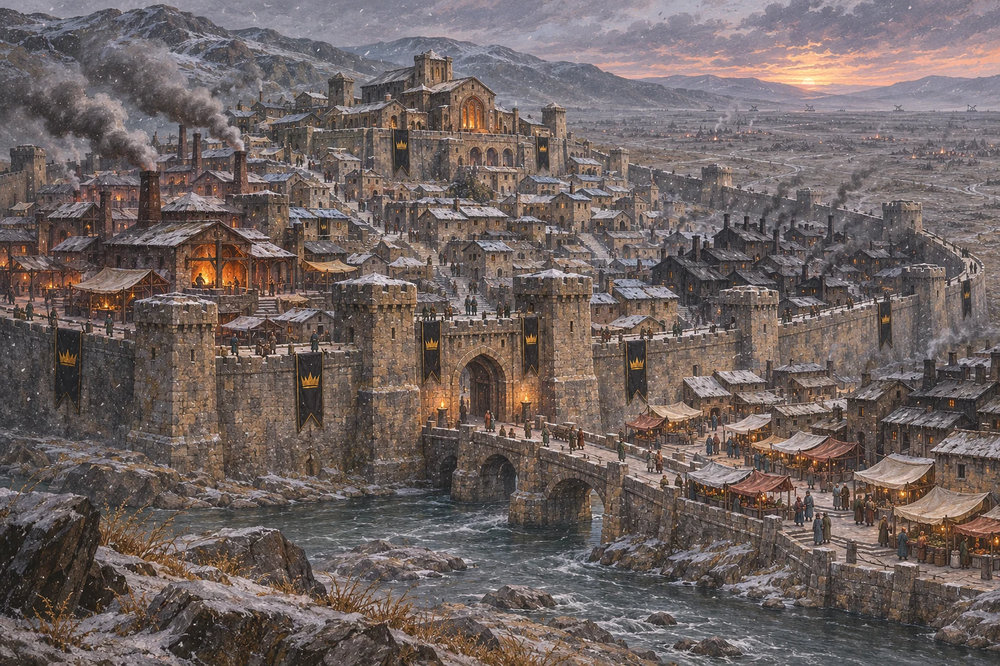
Ремесленный город на речной переправе, обнесённый старой стеной, которую делят на пять участков обороны. Верхние улицы поднимаются террасами к Коронному двору; Рабочие дворы с горнами лежат на западе, Нижний рынок — у реки на юго-востоке, Угольная слобода — на востоке, под самой стеной. Город вырос вокруг кузен и переправы. Над башнями висят чёрные угольные знамёна с золотой короной из углей, и под каждым на стене стоит сотня горожан.

Верхняя терраса в середине города, откуда видны все пять участков стены. Под навесом горит жаровня и стоит стол со схемой стены и знамёнами-фишками; здесь правительница принимает защитников без очереди, и спорят здесь громче, чем на стене. В старом амбаре — приют Радеи для стариков и детей, пахнет кашей и сушёными травами. Отсюда вниз, к Воротному двору, идут широкие Коронные ступени.

Арка в восемь шагов между двумя башнями; створы из морёного дуба окованы полосами железа из мастерских Венца, и на них мелом пишут приказы и новости. В западной башне — ворот решётки и сигнальные рога. Внутри — Воротный двор с баррикадой из телег, с юга к нему спускаются Коронные ступени. Снаружи склон уходит к Холму Знамён; на камне арки выбиты годы трёх прежних осад, которые город выдержал.
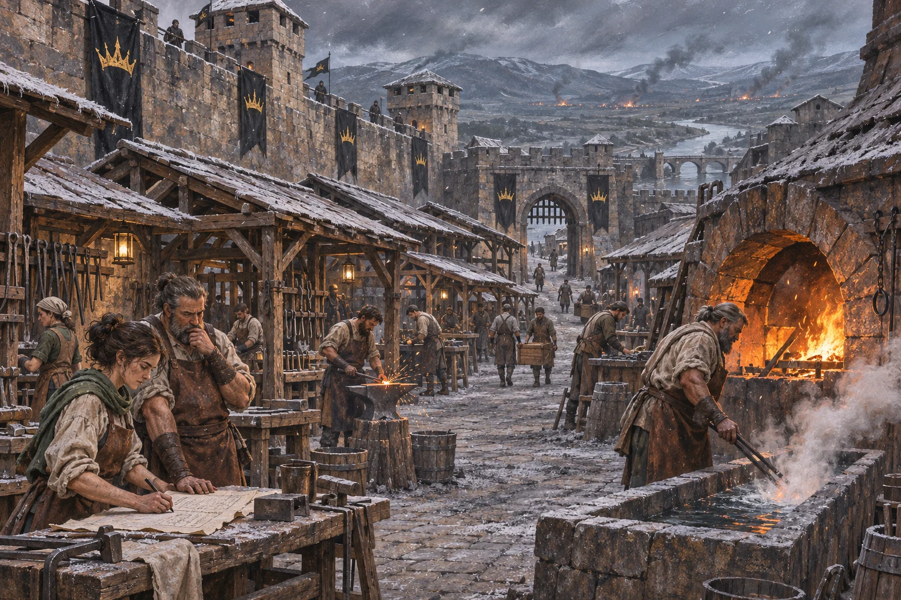
Западный квартал мастерских, где днём и ночью стучат молоты: навесы, верстаки, большой горн Журны, корыто для закалки железа, запах угля и окалины. Здесь куют подковы, плуги, замки и решётки для всех Жарских пределов. Северная проходная ведёт к Воротному двору; западная стена квартала смотрит на поле. Сажа въедается здесь в кожу так, что мастерового узнают по рукам.

Торговые ряды у реки, где в мирное время торговали рыбой, солью и железом с барж, а теперь кормят защитников: в больших котлах варят похлёбку, и очередь за ней не кончается до полуночи. Речная стена тянется от Рыбного спуска на западе до Водяной башни на востоке, и держат её рыбаки. Отсюда начинается Камышовая дорога.
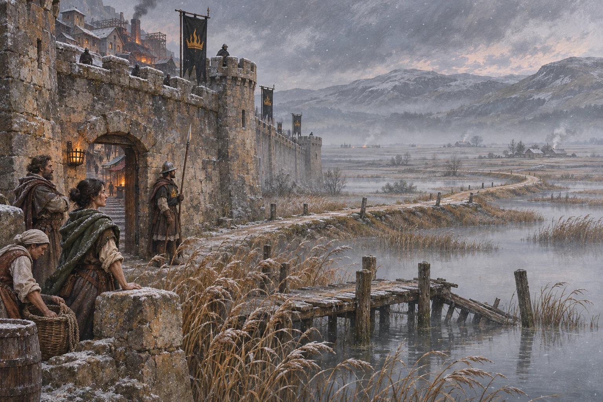
Камышовая калитка и старая пристань на южном краю города, где сушатся сети и пахнет тиной. Низкая дорога идёт по сухим островкам поймы к соседским дворам; в половодье её заливает, и тогда ходят по вешкам. За поймой видны чужие караулы и их костры. Здешние рыбаки говорят, что Камышовая выручала город в каждую прежнюю осаду.
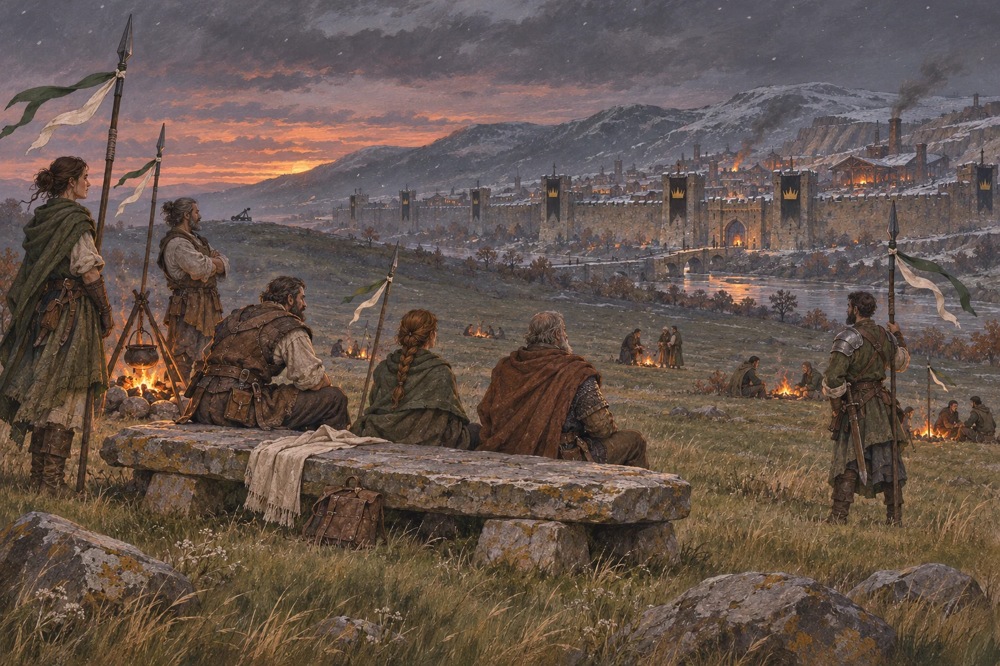
Открытый холм к северу от города, где испокон веку собирались сходы окрестных общин: на вершине стоит каменная скамья, на которую выборные садятся рядом, а не друг напротив друга. Сейчас там горят костры соседского ополчения, и над ними висят знамёна без короны. На нижнем склоне, ближе к воротам, стоит катапульта Жаровня.
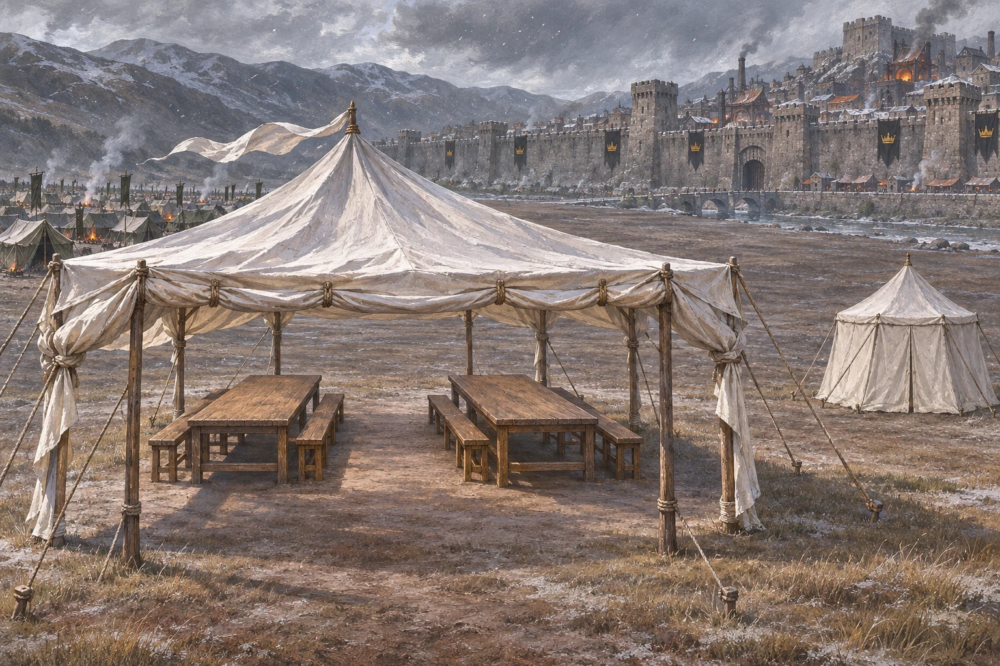
Переговорный шатёр из белёного полотна на южном поле перед лагерем маршала, видный с любой башни. Внутри два равных стола и скамьи, открытые с обеих сторон, чтобы никто не сидел спиной к чужим. По обычаю перемирия под белым флагом здесь не поднимают оружия, а поручители ночуют в павильоне до утра. Рядом стоит отдельный шатёр знамени.

Стена над Угольной слободой: с запада на восток — от Угольной башни, где она сходится со старой стеной, до Угловой башни. Наружная сторона смотрит на север, на поле с серыми знамёнами. Под стеной — дома угольщиков, крыши почти касаются зубцов, и в мирное время на стене сушили бельё. Узкий Колодезный переулок выводит из слободы в город; камни Вдовы прилетают с северо-востока.
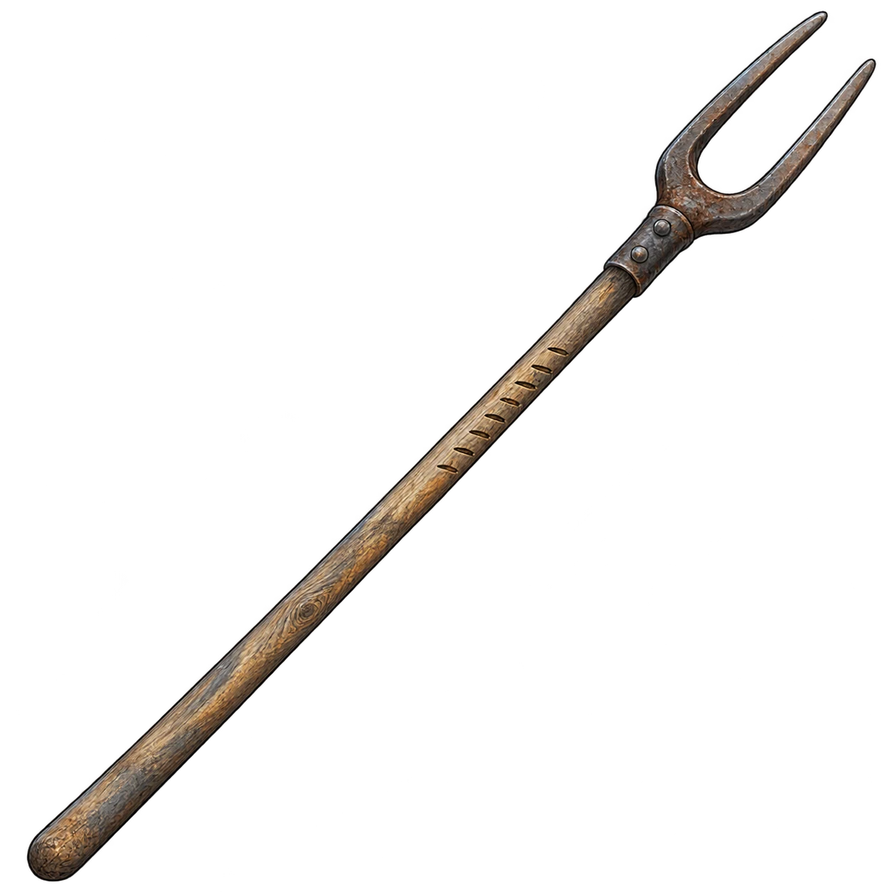
Двузубая рогатина на ясеневом древке, зубья стёрты о камень зубцов. На древке зарубки — по одной за каждую сброшенную лестницу.
В бою «Крюки на зубцах» Тарна сбрасывает лестницу бонусным действием, а не действием. В ночном штурме пара, где стоит Тарна, отбивает лестницы без броска.

Медный рог посыльного на ремне, мундштук потёрт губами. Его звук слышно на Холме Знамён.
В битве за Северные ворота Оллир подаёт сигнал соседям (три рога) бонусным действием из любой клетки, с раунда 2. Без Оллира сигнал подают рога башни — действием героя на A2.

Белое полотно на коротком древке, подшитое по краю. В полотнище и в несущих мёртвого по обычаю не стреляют.
Путь к Белому павильону и к обломкам Угольной башни без броска. С ним и словом Борука — мирная «Вылазка к Жаровне». Полотнище одно: кто его взял, тот под ним и идёт.

Перевязь из льняного шнура через плечо Радеи; на ней узел за каждое имя, принятое в приют у Коронного двора.
Вечер 4, сцена 1: Радея уводит семьи слободы в приют без броска — в «Проломе у Угольной башни» нужно на одну группу семей меньше.

Кожаный футляр с планами башен Рудного Венца и складной линейкой; планы в пятнах золы и пометках углём.
Улика «Зольная засыпка» без броска: Демек читает трещины Угольной башни и называет срок.

Деревянный жетон на шнурке с вырезанным знаком двора Вонды; по нему соседи её двора узнают своих.
Раз за кампанию, в сцене 4 любого вечера до залпа: Вонда зовёт резервную сотню своего двора — +1 знамя любому непрорванному участку.
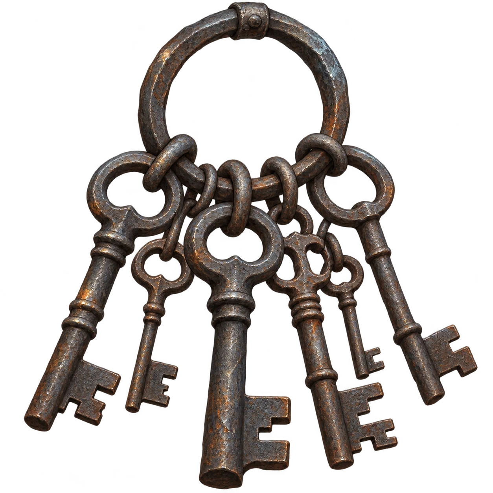
Связка тяжёлых ключей от проходных и навесов Рабочих дворов на железном кольце.
Вечер 6, сцена 1: запереть западный навес — в «Гвардии в проходной» факельщики подходят на раунд позже. В битве за ворота — запереть западную дверь A7 действием на A7 или рядом: дальше через неё никто не входит.

Простой железный обруч, тёмный от копоти. Его надевали правители Рудного Венца в знак клятвы делить последний очаг города. Чар в нём нет.
В бою ничего не делает. Ильвара кладёт обруч в середину схемы в вечер 1 и надевает перед рассветом вечера 8; в последнем образе любого исхода он в руках Ильвары или Мейры, на нём зола.
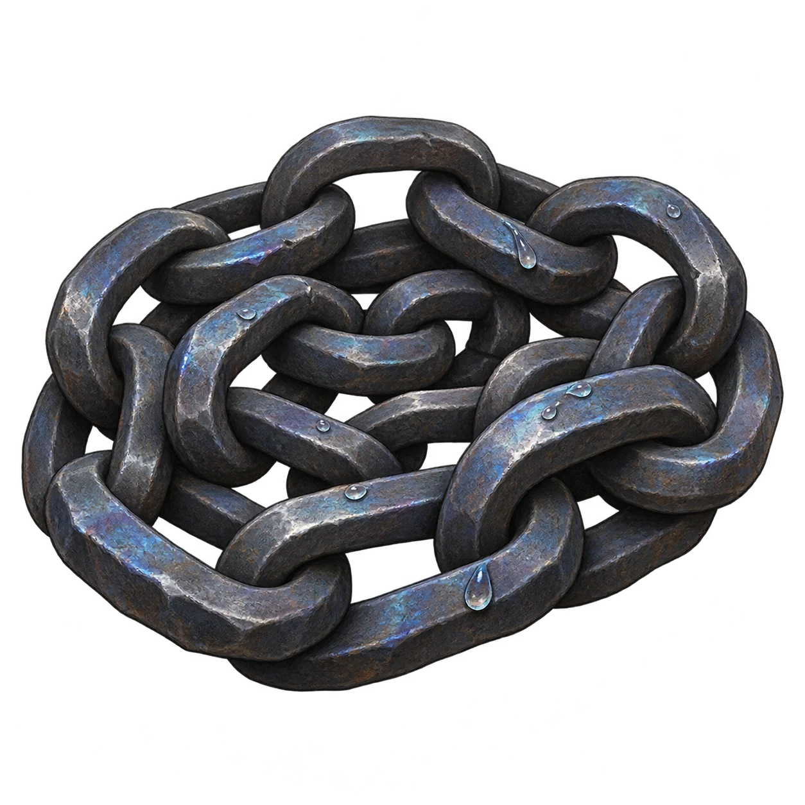
Цепь из горна Журны, звенья ещё синие от закалки; к сумеркам вечера 6 она остывает в корыте у горна.
Цела после «Гвардии в проходной» — в битве решётку опускают одним действием героя на A2. Испорчена — нужны два действия двух разных героев на A2 или рядом в одном раунде.
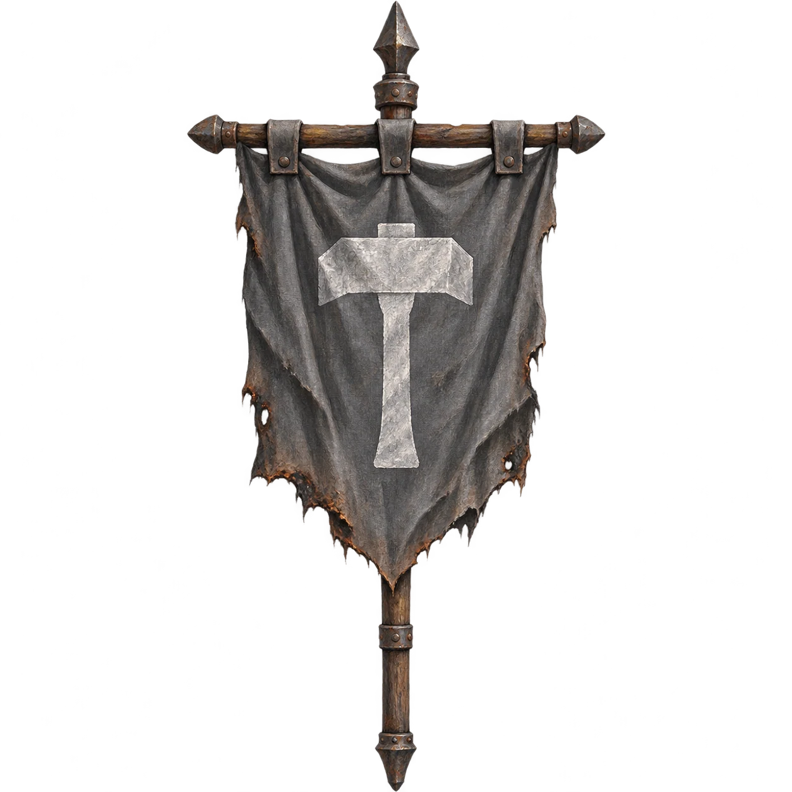
Серое полотнище с серебряным молотом на древке за спиной капитана гвардии Ормунда Сайра; края подпалены у костров.
Знамя маршала. Поднято Сайром на Коронных ступенях в битве — поражение. Сорвано героем (действие рядом с Сайром на рядах 11–12 или с 20 хитами и меньше, одна попытка за раунд на весь отряд; Атлетика против +3) — Сайр отходит, победа в конце раунда.
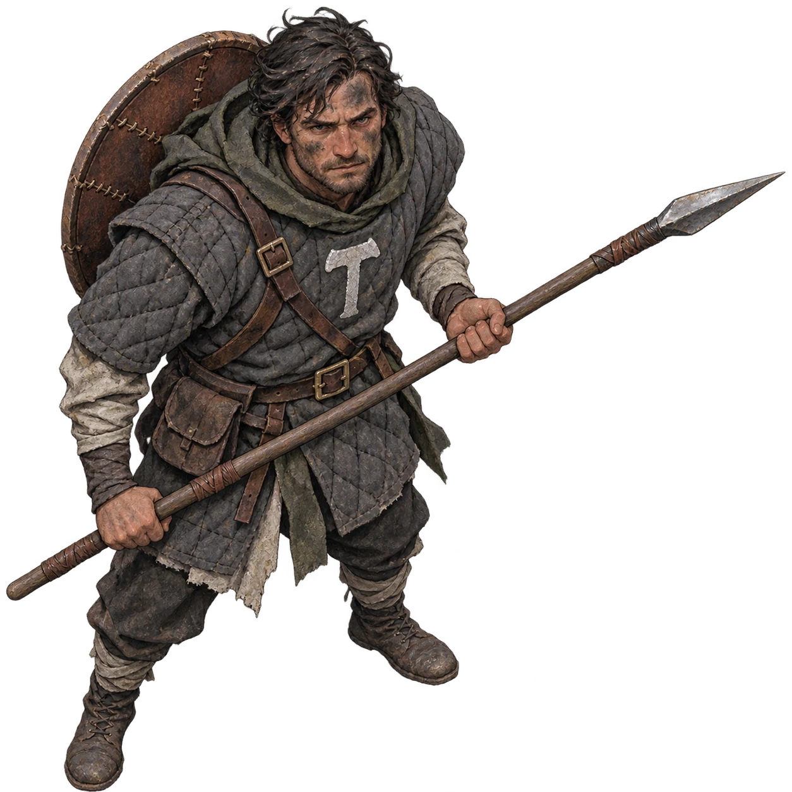
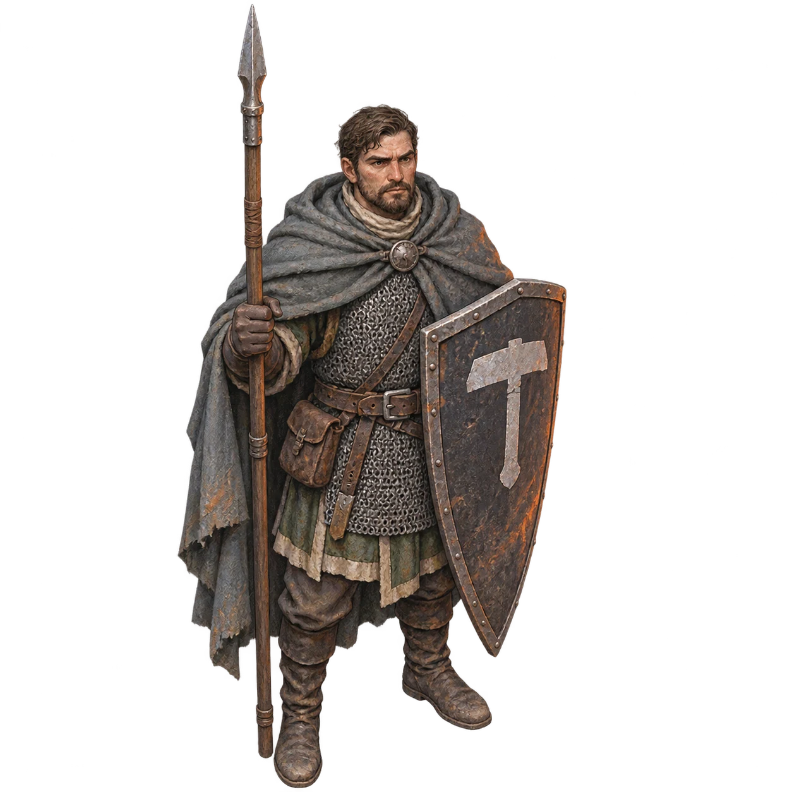

Условия: Битва за Северные ворота кончилась, а «Серый молот» не поднят на Коронных ступенях: Ормунд Сайр отошёл за арку, сдался или упал, знамя сорвано или прошёл раунд 8.
Риорд трубит отход и снимает осаду до весны. Рабочие семьи остаются свободными, кроме отданного квартала; переправа и кузни — городские. Осада снята, война — нет.
Цена: Город стоит на чужой крови. Ведущий берёт первую подходящую строку и описывает её образ — это последний образ кампании. 1) Соседи — если ополчение Эрдика пришло в бой и к концу боя не было впущено за арку: решётка опущена или арка свободна, но за ней, в золе предворотья, держат дорогу зелёно-белые ленты на копьях; к полудню с Холма возвращается половина знамён соседей. Эрдик у решётки: «Мы пришли. Вы — нет». 2) Отданный квартал — иначе, если на рассвете вечера 8 прорван участок, чей квартал не выведен (Восток/Зольная баррикада — слобода, если её семьи не вышли в «Проломе у Угольной башни»; Рынок и Камыш — если не ушла колонна Мейры; Мастерские): отходя, обоз Риорда уводит семьи этого квартала под серым знаменем; с Коронных ступеней видно, как по золе идёт колонна, и Борук считает телеги вслух. 3) Рабочие Журны — иначе: у горна на гвоздях висят кожаные фартуки тех, кто каждую ночь чинил стену под Вдовой и держал ворот решётки; гвоздей больше, чем вернувшихся. Журна вешает свой фартук рядом. Образ кончается одной деталью: Ильвара на Коронных ступенях держит железный обруч, на нём зола.
Условия: Знамя «Серый молот» поднято на Коронных ступенях (или все герои в битве выбыли), а участок Камыша на рассвете вечера 8 не прорван (1 и больше).
Пока гвардия поднимает знамя у ворот, Мейра выводит по Камышовой дороге всех, кто успеет, к соседским дворам. Риорд получает Верхние улицы, которые и так хотел сохранить, и пустые мастерские. Упавших героев выносят свои.
Цена: Город сдан; уходят без тяжёлого ремесла; соседи кормят беглецов в долг. Последний образ: у Камышовой калитки Ильвара отдаёт обруч Мейре: «Несите туда, где будет очаг».
Условия: Знамя «Серый молот» поднято на Коронных ступенях (или все герои в битве выбыли), а участок Камыша на рассвете вечера 8 прорван (0).
Пощада исполняется по полному тексту: Верхние улицы целы, мастеровые семьи идут обозом на Поселение у Сухих Печей. Упавших героев выносят свои; плена героев нет.
Цена: Последний образ: Ильвара выходит к Риорду с обручем и предлагает себя вместо рабочих. Риорд отвечает: «Мне не нужна правительница. Мне нужны кузнецы». Колонна уходит в золу.
Авторская подготовка и техническая проверка не заменяют живую игру. Длительность, сложность и эмоциональное восприятие пока не проверены группой. Иллюстрации (49) созданы генерацией изображений OpenAI в одном стиле; тактические схемы построены из данных встреч. Полный каталог содержит материалы ведущего — публиковать его целиком для игроков нельзя.